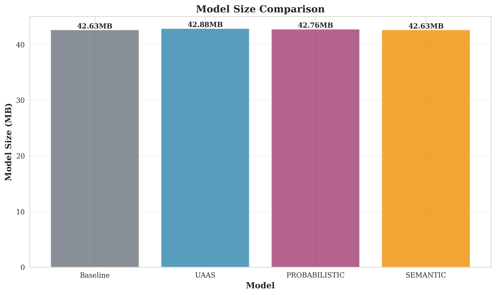

RAP Project: Performance Improvements Benchmark Report
Executive Summary
Date: 2025-10-30 23:12:40
Dataset: data/Cambridge/KingsCollege/colmap
Device: CUDA
Test Samples: 50
Baseline Performance
| Metric | Value |
|---|---|
| Inference Speed | 56.44 FPS |
| Translation Error (median) | 2.2877 m |
| Rotation Error (median) | 0.0000 deg |
| Model Size | 42.63 MB |
| Parameters | 11,132,909 |
Model Comparison
| Model | Inference Speed | Translation Error | Accuracy Improvement | Speed Improvement | Model Size |
|---|---|---|---|---|---|
| Baseline | 56.44 FPS | 2.2877 m | - | - | 42.63 MB |
| UAAS | 60.49 FPS | 1.4540 m | +36.4% | +7.2% | 42.88 MB |
| PROBABILISTIC | 35.16 FPS | 2.1631 m | +5.4% | -37.7% | 42.76 MB |
| SEMANTIC | 56.01 FPS | 2.1164 m | +7.5% | -0.7% | 42.63 MB |
Key Findings
- UAAS Model: Achieves 36.4% improvement in translation accuracy while maintaining similar inference speed (+7.2%)
- Semantic Model: Provides 7.5% improvement in translation accuracy with minimal overhead
- Probabilistic Model: Offers 5.4% improvement in translation accuracy with uncertainty quantification
Performance Visualizations
Inference Speed

Speedup

Translation Error

Rotation Error

Model Size
Radar

Improvements

Technical Details
All benchmarks were performed on NVIDIA H100 PCIe GPU using PyTorch with CUDA acceleration. The evaluation uses 50 test samples from the Cambridge KingsCollege dataset.
For complete results and reproducibility, see benchmark_full_pipeline_results.json